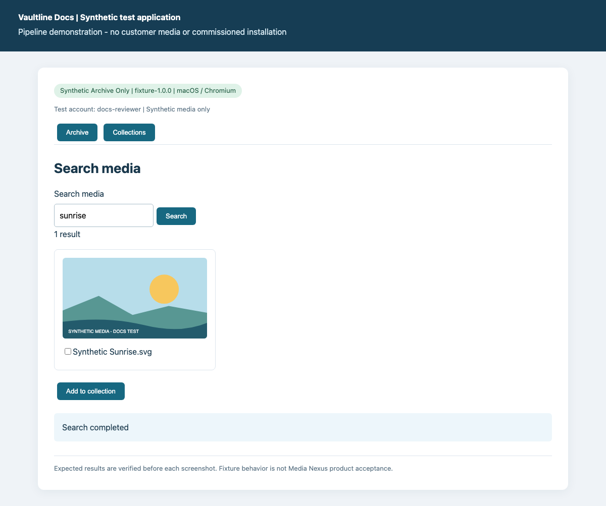
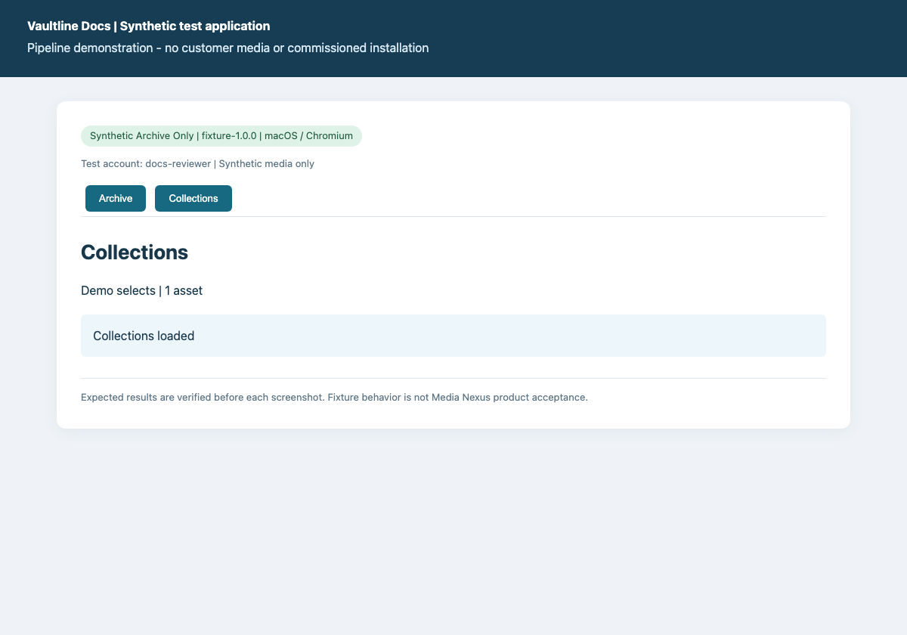

product: Synthetic Archive
source_revision: 9481055f2b20bdad6d3dc5afc68af37e1aadf687
generated_at: 2026-10-12T07:36:58.393704+00:00
status: draft
package_id: 9481055f2b20-e7c443d4c799
deployment: archive-only
deployment_version: fixture-1.0.0
platform: macOS / Chromium
modules: core, archive
manifest_sha256: 34ade4e49966b4deb3da03adb8d48417baf05e197faa08c800f23b5f925c7b75
capture_status: verified-synthetic
Search the archive and create a collection
Find synthetic media and organize a selection without moving the original.
Deployment: Synthetic Archive Only. macOS / Chromium.
> Synthetic test fixture. These screenshots demonstrate the pipeline, not an installed Media Nexus client.
Deployment configuration
- collections: True
- remoteTransfer: False
- workstation: Synthetic archive desk
Prerequisites
- Sign in with the built-in synthetic docs-reviewer account.
- Archive and Collections must be enabled.
Steps
1. Search media
Enter sunrise in Search media and click Search.
Expected: 1 result

2. Create and add
Select Synthetic Sunrise.svg, choose Add to collection, enter Demo selects and choose Create and add.
Expected: Collection created: Demo selects
3. Check the collection
Open Collections and verify Demo selects contains one asset.
Expected: Demo selects | 1 asset

Expected result
- Demo selects contains the selected synthetic asset. The source media remains in the archive.
Recovery
- If no result appears, check the exact search term sunrise and retry the search.
- Collection creation requires a name and selected media. Select the result before creating.
Deployment notes
Use the collection prefix ARCHIVE- for this synthetic deployment.
Evidence and review
- Screenshot verification: all documented fixture steps asserted in a fresh browser session.
- Source:
search-collection.json:1; file SHA-256 72ec54008d0c8125e3052efe05c3bbcca6f6ab3c0bc66b3f7f7aa6710e02ba29.
Generated by Vaultline Docs. GPL-3.0-or-later. See package NOTICE, LICENSE and COPYING.